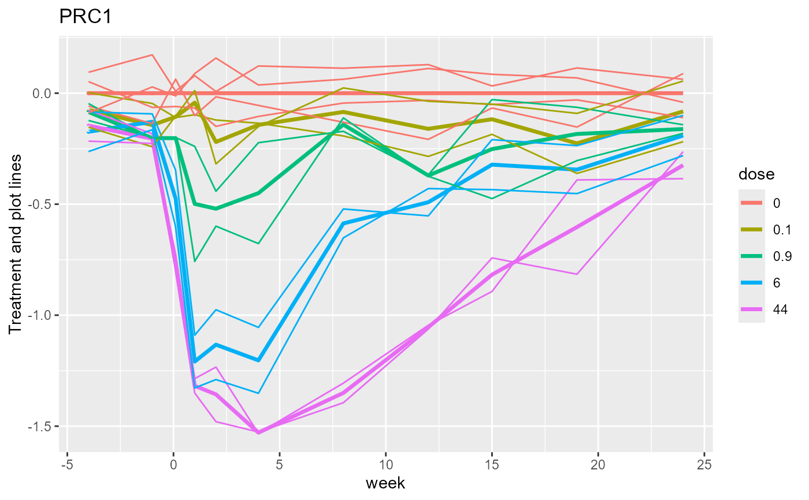
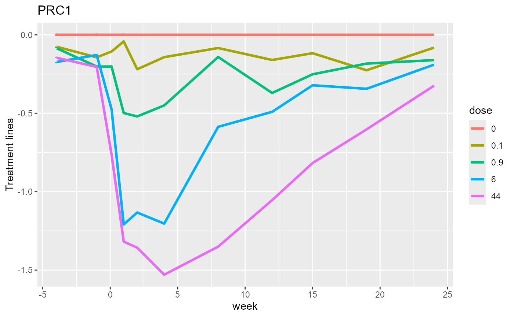

PRC diagram of treatment and plot lines or points without species loading
Source:R/plot_sample_scores_cdt.R
plot_sample_scores_cdt.Rdplot_sample_scores_cdt creates a PRC diagram of the treatments without species loadings.
plot_sample_scores_cdt(
object,
treatment = NULL,
condition = NULL,
plot = 1,
xvals = NULL,
score_name = "PRC1",
size = c(2, 2),
symbols_on_curves = FALSE,
verbose = TRUE
)Arguments
- object
a result of
doPRCorPRC_scoresor a list with element PRCplus (a data frame with a variables to plot, see details).- treatment
character vector of names of factors in
object$PRCplus, the first two of which set thecolorandlinetypeof treatments. Default: derived fromobject$'focal_and_conditioning_factors'.- condition
character vector of names of factors in
object$PRCplus, the first one being used as x-axis. Default: derived fromobject$'focal_and_conditioning_factors'.- plot
0 or 1 (no/yes individual plot points) or character name of a factor in
object$PRCplusindicating the plots (microcosms, subjects or objects) in a longitudinal study so as to plot lines. Default: 1 yielding points instead of lines.- xvals
numeric values for the levels of the condition factor, or name of numeric variable in
object$PRCplusto be used for the x-axis. Default: NULL for which the values are obtained using the functionfvalues4levelsapplied toobject$PRCplus[[condition[1]]]- score_name
name of scores to use as y-axis; default: "PRC1".
- size
size of symbols and symbols in the legend. default: c(2, 2). If the length is not 2 than the first entry is replicated.
- symbols_on_curves
logical, draw symbols on the PRC curves at the measurement times (default FALSE). If
TRUE, symbols are for the treatment, if there is one, and for the second treatment if there are two.- verbose
logical for printing the current model,
score_name,conditionandtreatment(default TRUE).
Value
a ggplot object
Details
plot_sample_scores_cdt can be used to
plot any ordination score or variable against the condition with treatments indicated by colors and line type
by setting score_name to the name of the variable of interest and argument plot to 0.
If object is not a result of doPRC or PRC_scores), set treatment and condition
(or object$'focal_and_conditioning_factors') and set object to a list with element PRCplus;
object$PRCplus should contain the names indicated by the arguments treatment, condition and, optionally, plot
treatment: a factor for the treatments,
condition: a factor or variable condition
If plot!=0, the scores (values) for individual sample points or lines must be in the variable "PRC1_E" or,
in general, paste(score_name,"_E", sep = "").
See also
Examples
data(pyrifos, package = "vegan") #transformed species data from package vegan
#the chlorpyrifos experiment from van den Brink & ter Braak 1999
Design <- data.frame(week=gl(11, 12, labels=c(-4, -1, 0.1, 1, 2, 4, 8, 12, 15, 19, 24)),
dose=factor(rep(c(0.1, 0, 0, 0.9, 0, 44, 6, 0.1, 44, 0.9, 0, 6), 11)),
ditch = gl(12, 1, length=132))
mod_rda <- vegan::rda( pyrifos ~ dose:week + Condition(week), data = Design)
#>
#> Some constraints or conditions were aliased because they were redundant. This
#> can happen if terms are constant or linearly dependent (collinear):
#> 'dose44:week-4', 'dose44:week-1', 'dose44:week0.1', 'dose44:week1',
#> 'dose44:week2', 'dose44:week4', 'dose44:week8', 'dose44:week12',
#> 'dose44:week15', 'dose44:week19', 'dose44:week24'
Design_w_PRCs <- PRC_scores(mod_rda, focal_factor_name= "dose", referencelevel = "0",
rank = 2, data= Design, scaling ="ms", flip = FALSE)
plot_sample_scores_cdt(Design_w_PRCs, plot = "ditch")
#> The analysis is based on model
#> pyrifos~dose:week + Condition(week)
#> The current score, condition and treatment(s) are:
#> score (y-axis): PRC1
#> condition (x-axis): week
#> treatments (color ): dose
#> Set these arguments yourself if you wish otherwise.

plot_sample_scores_cdt(Design_w_PRCs)
#> The analysis is based on model
#> pyrifos~dose:week + Condition(week)
#> The current score, condition and treatment(s) are:
#> score (y-axis): PRC1
#> condition (x-axis): week
#> treatments (color ): dose
#> Set these arguments yourself if you wish otherwise.
 plot_sample_scores_cdt(Design_w_PRCs, plot = "Ditch")
#> The analysis is based on model
#> pyrifos~dose:week + Condition(week)
#> The current score, condition and treatment(s) are:
#> score (y-axis): PRC1
#> condition (x-axis): week
#> treatments (color ): dose
#> Set these arguments yourself if you wish otherwise.
#> Warning: Ditch is not a variable in object$PRCplus
plot_sample_scores_cdt(Design_w_PRCs, plot = "Ditch")
#> The analysis is based on model
#> pyrifos~dose:week + Condition(week)
#> The current score, condition and treatment(s) are:
#> score (y-axis): PRC1
#> condition (x-axis): week
#> treatments (color ): dose
#> Set these arguments yourself if you wish otherwise.
#> Warning: Ditch is not a variable in object$PRCplus
